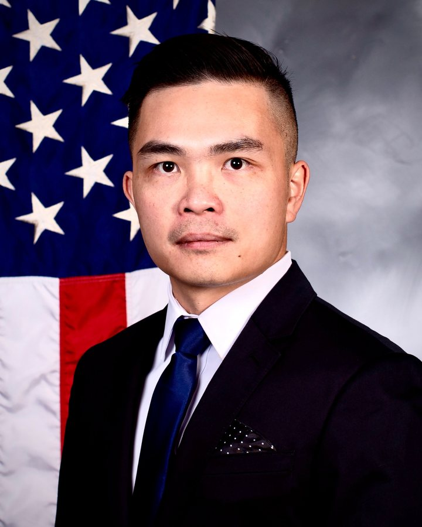

CV and press kit
A short web version of my CV, followed by bios and a headshot for media and events.
Positions
- 2026 to nowAssistant Director of Graduate Studies, Data Science, and LecturerHarvard University. Co-director of the Data Science master’s program; teaching staff for AC209a and co-head instructor for AC297r
- 2023 to 2026Assistant Professor of Mathematics (tenure track)United States Naval Academy (U.S. Department of Defense)
- 2022 to Aug 2026Postdoctoral fellow, then affiliated facultyPerelman School of Medicine, University of Pennsylvania
- 2017 to 2022Doctoral assistant, Industrial EngineeringPurdue University. Graduate researcher at the Data Science Institute, Lawrence Livermore National Laboratory (U.S. Department of Energy), summers 2019 and 2020
- 2015 to 2017Graduate assistant, Engineering ManagementWestern Michigan University
- 2014 to 2016Program manager and planning engineerMann+Hummel and Denso
Education
- 2022Ph.D., Industrial Engineering, Purdue UniversityDissertation: On geometric and algebraic properties of human brain functional networks
- 2022Graduate Certificate, Teaching and Learning in Engineering, Purdue University
- 2017Master’s, Industrial Engineering, Western Michigan UniversityThesis: Revisiting the one-sided exponentially weighted moving average control chart design
- 2014Bachelor’s, Industrial Engineering (Operations Research), Western Michigan University
- 2014Bachelor’s, Mathematics (Graph Theory), Western Michigan University
Selected honors
Paper awards are listed on the home page.
- 2022Outstanding Service Scholarship Award, School of Industrial Engineering, Purdue University
- 2019Estus H. and Vashti L. Magoon Excellence for Teaching Award, Purdue University
- 2017Ross Doctorate Research Fellowship, Purdue College of Engineering
- 2017Outstanding Graduate Student Award, Western Michigan University
- 2014Top 5 Undergraduate Seniors in Industrial Engineering, Western Michigan University
Selected invited talks
- 2024“Out of Many, One”: the American motto from a neuroscience perspectiveAmerican Center, Ho Chi Minh City, Vietnam. See photos
- 2023The human brain as viewed through the lenses of mathematicsVinUniversity, Hanoi, and Children’s National Hospital, Washington, DC
- 2023On recent advancement of SPD matrix analyses in brain networksUniversity of Nevada
- 2023On topological, geometric and statistical properties of human brain functional networksUniversity of Maryland, College Park
- 2022When machine learning meets the brain: the dawn of Neuro-AIFPT Software, Saigon, Vietnam
- 2022Engineering education: how to build an engineering major in a liberal arts collegeFulbright University Vietnam
Press kit
Free to use for media and event programs. Please keep the name and title as written.

Download high-resolution headshot

Short bio
Duy Duong-Tran, Ph.D., is Assistant Director of Graduate Studies in Data Science and a lecturer at Harvard University, where he co-directs the Data Science master’s program. His research connects network neuroscience, biomedical AI and mathematical modeling. He has worked in both the U.S. Department of Defense, as an assistant professor of mathematics at the U.S. Naval Academy, and the Department of Energy, at Lawrence Livermore National Laboratory, and holds a Ph.D. in industrial engineering from Purdue University.
Long bio
Duy Duong-Tran, Ph.D., is Assistant Director of Graduate Studies in Data Science and a lecturer at Harvard University, where he co-directs the Data Science master’s program and teaches Introduction to Data Science and Capstone Projects. His research sits at the intersection of network neuroscience, biomedical language and vision models, and engineering education, with work published in venues such as Nature Communications, ICLR, EMNLP, MICCAI and AAAI workshops, and honored with paper awards at ACM-BCB and the AMIA Informatics Summit.
From 2023 to 2026 he was a tenure-track assistant professor in the Department of Mathematics at the U.S. Naval Academy, where he led programs for midshipmen in Vietnam and served on faculty search committees. From 2022 to 2026 he also worked with the Shen Lab at the Perelman School of Medicine, University of Pennsylvania, first as a postdoctoral fellow and then as affiliated faculty. He earned his Ph.D. in industrial engineering at Purdue University and worked at Lawrence Livermore National Laboratory, a Department of Energy laboratory, during his doctoral studies. Before academia he managed automotive programs at Mann+Hummel and Denso.
Speaking photos


American Center, Ho Chi Minh City, 2024. Select a photo to download it.
Contact
For collaborations, speaking and media requests.
- HarvardDirectory profile
- GitHubgithub.com/dduongtr
- ScholarGoogle Scholar profile
- LinkedInLinkedIn profile